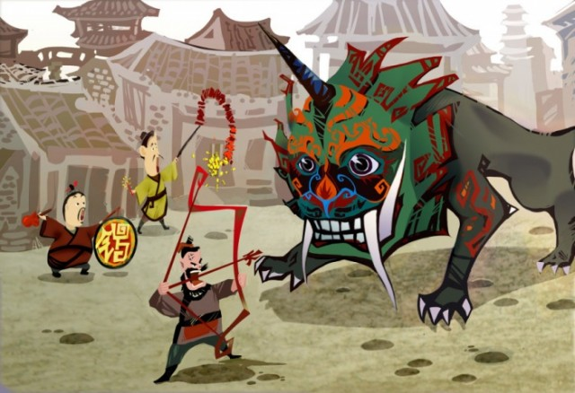
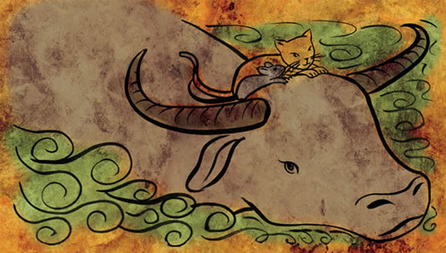

About: The Chinese New Year is the most important and biggest celebration of the Chinese culture. It is perhaps equivalent to, or even grander than, the Christmas season in the West. Many traditional practices and foods abound for this holiday, most of which symbolize prosperity and hope for the new year.
Date: 1st to 15th day of the first lunar month
Lore
The Legend of Nian--Long ago in China, there was a beast called Nian, with the head of a lion and the body of a bull. It was a fierce monster who lives in the seas all year long, but at the end of every winter would visit the nearby villages and devour people and livestock. Thus the villagers live in fear of this monster, and would flee the villages every year to hide in the mountains.
Then one year, an old beggar came to the village while its people were busy evacuating. Everybody was leaving in too much of a frenzy to care fo the beggar. Only an elderly grandmother offered the beggar some food and shelter, whileadvising the old man to hurriedly head to the mountains to avoid the Nian. However, the old man instead asked to stay for the night. Seeing that she could not persuade him to flee, the grandmother left with the rest of the villagers, leaving the beggar to stay in her house.
That night, the Nian stormed into the village to wreak havoc. As it neared the grandmother’s house, it found the doors decked with bright red banners. Offended, it drew nearer and was suddenly met by exploding firecrackers. Startled by the noise, the flahes of light, and the red emblems flying about, the Nian turned and fled!
It turns out that the Nian is afraid of the color red, fire, and loud noises. When the villagers returned and found the grandmother’s house intact, they realized the old man was actually a diety who came to deliver them from the monster. Overjoyed by this discovery, the people celebrated by visiting each other and spreading the news to other villages.
Since then, at the end of every winter, the villagers would post bright red banners on their houses and light firecrackers to drive away the Nian. In Chinese, the word “Nian” sounds the same as the word “Year,” and thus the tradition of “Passing the Nian,” or “Passing the Year,” was born.
The Chinese Zodiac--Every Chinese New Year is represented by an animal and its attributes, with a repeating cycle of 12 years. In the Ancient Times, the Jade Emperor, the highest diety in Heaven, declared a race of all animals. The first twelve animals to finish the race would each have a year designated to them. In those days, Cat and Rat were good friends. They worried that, as the smallest animals, it would be difficult to finish the race, which involves running through the forest then swimming across a wide river.
The Cat and Tat convinced the water buffalo to help them with the race. They decided that they would hitch a ride on the water buffalo’s back, since he is the strongest swimmer. In return, they promised to help the buffalo navigate by using their marvelous vision. On the day of the race, intially everything went according to plan. However, as the buffalo, with Cat and Rat riding on top of him, was swimming in the middle of the river, Rat, full of trickery and coveting first place for himself, suddenly pushed Cat into the water. Then, as the buffalo neared the shore, Rat cleverly leapt from atop the buffalo’s head onto the shore, claiming first place. Thus, the buffalo came into second place. By the time Cat finished struggling through the river, the twelve places had all been filled by Rat, Buffalo, Tiger, Rabbit, Dragon, Snake, Horse, Ram, Monkey, Rooster, Dog, and Boar. Therefore, because of Rat’s treachery, the Cat hates the Rat to this day and will always chase after to try to kill the Rat.
Traditions
For Chinese New Year's, adults give children Red Envelopes, which contain money. Since the New Year symbolizes starting anew, people will also clean their houses and buy new clothes. To drive away the Nian (see Lore above), people set off firecrackers and fireworks and perform lion dances. The colour red abounds everywhere, in clothing, banners, lanterns, decorations, as red not only scares the Nian but also symbolizes prosperity, joy, and festivity to the Chinese people
Food
The Chinese New Year is an opportunity for a veritable feast. Many of the foods symbolize good tidings. For example, fish in Chinese is homonymous with “remainders”. Thus, fish during the New Year’s to wish the eaters would have years so abundant that they would have leftovers remain. Dumplings are also eaten because they resemble the shape of traditional Chinese gold ingots (currency used in ancient China). It is said the more dumplings one eats, the more money they can make in the coming year.
For desserts, oranges are eaten because their name in Chinese sounds like “luck.” Sweet sticky rice cakes (nian gao), made of glutinous rice pastes and deep fried to deliciousness, are also consumed. In Chinese, nian gao literally translates to “year high,” signaling that the coming year will achieve higher and better statuses for many things, from children getting taller, getting promotions at work, reaching success, getter higher grades, etc.
The Chinese New Year is a time to splurge, and food is no exception. Besides the luck-bringing foods listed above, an often seen commodity is snack trays brimming with goodies such as candies, cookies, dates, and sweet mung beans.